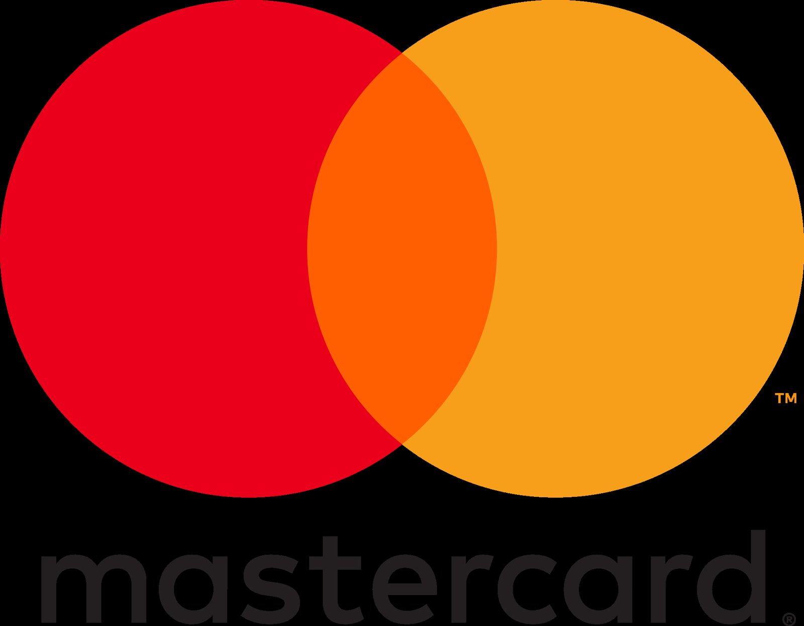
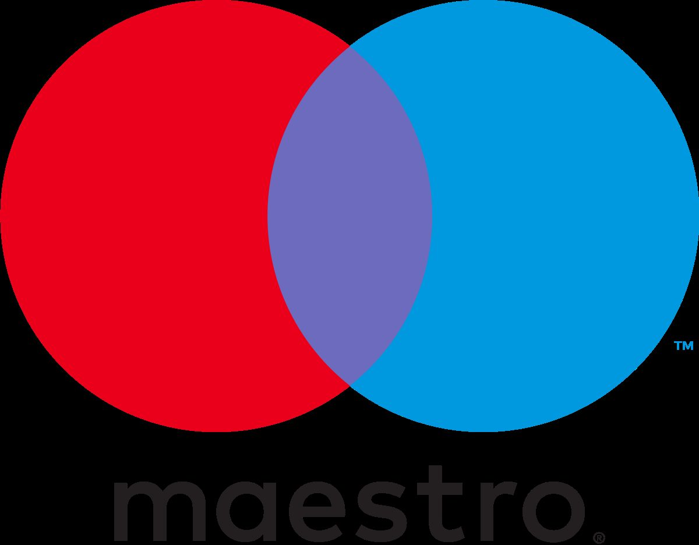

Start › Kontakt
Kontakt & Anfahrt
Hier dürfen Sie Platz nehmen
Josefstädter Straße 66, 1080 Wien – täglich von 8 bis 23 Uhr.
Café Restaurant Hummel
Josefstädter Straße 66, 1080 Wien
Österreich
Tel. +43 1 405 53 14
Fax +43 1 405 53 14 – 22
Reservierung: reservierung@cafehummel.at
Theke: theke@cafehummel.at
Veranstaltungen: event@cafehummel.at
Öffnungszeiten
- Montag bis Sonntag8 – 23 Uhr
- Frühstückbis 14 Uhr
- Mittagsmenü11 – 15 Uhr
- Warme Küche11 – 22 Uhr
- Early Hummel (Mo – Fr)jeder Kaffee € 2,508 – 9 Uhr
Abweichende Zeiten an Feiertagen und zum Jahreswechsel geben wir unter Aktuelles bekannt.
Liefern lassen
Speisen und Frühstück zum Liefern und Abholen über MJAM und Wolt oder direkt über die Café-Hummel-App. Telefonische Bestellung unter +43 1 405 53 14.
In der Fußgängerzone – mit Sonnenterrasse davor.
Route öffnenZahlungsmethoden
Karte, kontaktlos, Gutschein


Apple PaySodexoEdenred